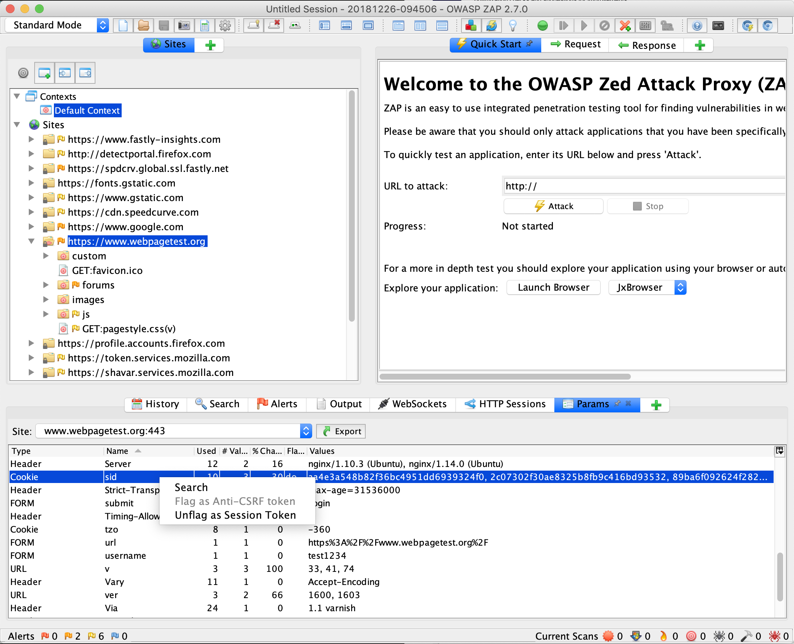

AJAX Spider with Authentication using OWASP ZAP
Posted on December 26, 2018 in Security Testing • 2 min read

In this article, I will be explaining basic steps on how to configure OWASP ZAP - AJAX Spider with Authentication. I will be covering following:
- Identify a Test URL/Website to Test
- Add Test Website in Default Context
- Login to Web Application to estabilish HTTP Session
- Mark Logout link as Out of Context
- Set HTTP Session as Active
- Attack the URL using AJAX Spider
Prerequisite: Before we begin with AJAX Spider, please go through the following article to make sure that ZAP Proxy is configured properly. We will be using Firefox in this example.
AJAX Spider with Authentication using OWASP ZAP
Step 1: Identify a Test URL/Website to Test
In this example we will be using https://www.webpagetest.org/
Make sure you have configured the Zap Proxy so that ZAP can listen to HTTP Request and Response between the Firefox browser and this URL. Also make sure you have permission to test and attack the URL using AJAX Spider. The website which I am demoing in this artile is just an example.
Step 2: Add Test Website in Default Context
Contexts in simple terms corresponds to Web Application and are is way of relating a set of URLs together.
Right click menu items in the Sites and navigate to Include in Context => Default Context
Notice that the URL is now added to the Default Context
Step 3: Login to Web Application to estabilish HTTP Session
Navigate back to Firefox browser and login into the website to establish a HTTP session
Once the session is established, go back to ZAP. You will notice that ZAP has identified the active session.
Navigate to HTTP Sessions => Sites and select appropriate site. You will notice a session token is already captured by ZAP

If you are unable to find any thing under HTTP Sessions then go to Params tab, select the appropriate site.
Here you should find the cookies which is responsible for maintaining the session. Right click on the cookie and flag it as session token
In my example since the cookie was automatically found, it’s already present in the HTTP Sessions tab.

Step 4: Mark Logout link as Out of Context
Marking the logout link as out of context will help maintain the session throughout this test.
Right click on menu items in Site and navigate to Exclude from Context => Default Context
Step 5: Set HTTP Session as Active
Navigate to HTTP Session and right click on the Session Token and click on Set as active
Notice the Green Checkmark indicating that the session is active.
Step 6: Attack the URL using AJAX Spider
After all the configuration, its time to now attack the URL using OWASP ZAP AJAX Spider. To Perform that Right Click on the Site and navigate to Attack => AJAX Spider and click on Start Scan button.